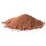
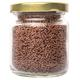

Brigadeiro
| Tempo | Dificuldade | Porções |
|---|---|---|
| 25 min | Fácil | 30 |
Autor: autor
Ninguém resiste a essa receita de brigadeiro: ele é o rei das festas de aniversário e é impossível comer um só. Seja pra comemorar ou afogar as, mágoas no com uma panela de brigadeiro assistindo um filme triste, essa receita faz parte do dia a dia do brasileiro há décadas. Muito tradicional em nosso país, o brigadeiro é muito fácil de preparar: leva apenas leite condensado, margarina, achocolatado em pó e chocolate granulado. Além de comer as bolinhas nas festas de aniversário, ele é um doce versátil que você pode consumir de diversas maneiras: como cobertura de bolo, recheio, com colher, em copinhos ou até mesmo misturando com biscoitos e fazendo palhas italianas. Veja agora mesmo como fazer brigadeiro de forma simples e prática! Você quer outras receitas de doces para festa de aniversário? Saiba como fazer beijinho, cajuzinho, olho-de-sogra, casadinho e muito mais aqui no TudoGostoso! Confira!
Ingredientes
-

1 lata de leite condensado
-

1 colher (sopa) de margarina sem sal
-

7 colheres (sopa) de achocolatado ou 4 colheres (sopa) de chocolate em pó
-

chocolate granulado
Utensílios
Panela
ComprarCopo medidor
ComprarEspatula
Comprar
Prato raso
ComprarModo de Preparo
- Em uma panela funda, acrescente o leite condensado, a margarina e o chocolate em pó.
- Cozinhe em fogo médio e mexa até que o brigadeiro comece a desgrudar da panela.
- Deixe esfriar e faça pequenas bolas com a mão passando a massa no chocolate granulado
Comentários
- 3 comentários